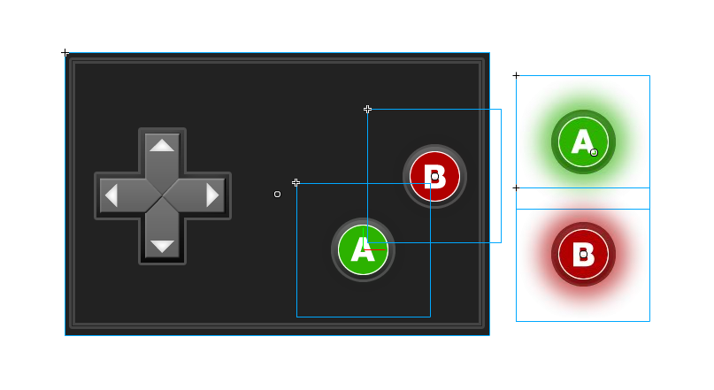
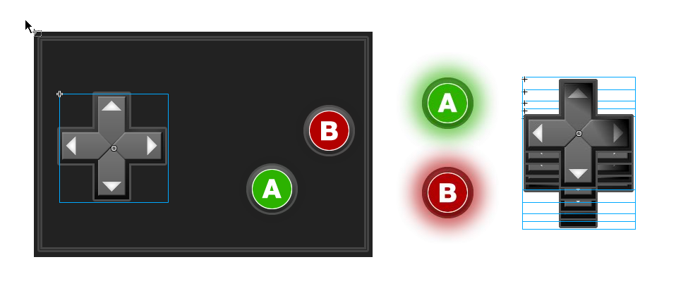
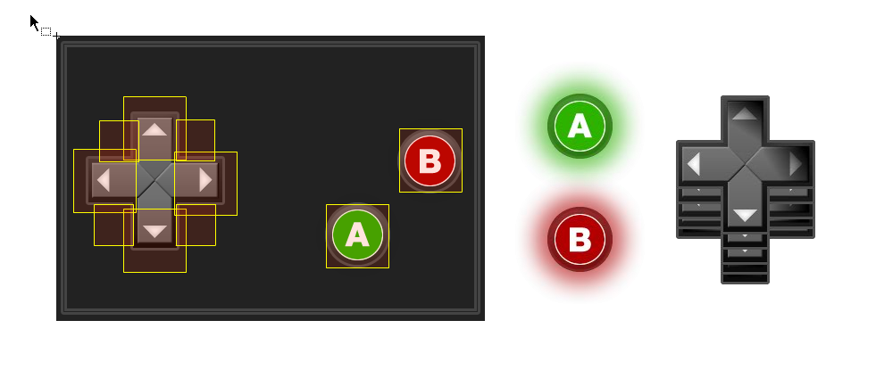

This document covers Brass Monkey’s recommended method for creating a standard four button D-pad for Brass Monkey enabled games. We’ve experimented with various setups and layouts using our new Hit-rect API, and this is what we’ve found to be the most effective D-pad implementation. For completeness we’ve also included the steps for creating two additional (A, B) game pad buttons.
This D-Pad control scheme is first created just like the standard controls that utilize the Flash Professional IDE. The method of using the flash IDE for creation lets you construct the controls visually, including the customized hit-rect areas.
This control has been set up with a background containing all the buttons, so our actual control buttons will not require any visualization for their up-state. First a new library symbol is created, and exported for runtime in frame one. This is our D-pad that will become the game’s controls. Next, we create a background symbol containing the visuals. The background symbol is placed upon D-pad symbol and the instance named 'background'. Note that all symbols and graphics created for a smart-device scheme should use the coordinates (0,0) as the upper left corner.
For the A and B buttons, we create two symbols that will be reused by each instance. First the easy part is creating the down state symbol using the additional glowing button graphic. In our case, the easiest way to make our up-state is by placing the downstate upon it and turning the alpha all the way down. The reason for this is to ensure our upstate graphic is the same size as the desired downstate. The control scheme is drawn according to 'upstates', and these particular upstates are blank. After the symbols are both created, place the down -state instances where you want the buttons located and give the instances the proper names 'btnA' 'btnB', etc... We only need one instance of the downstate and it does not need to be named or placed upon the actual scheme. It just needs to be present on the clip frame.

The D-buttons are made the same way. We Use a transparent graphic for the upstate, and place the down-state off to the side. There are eight buttons stacked up on the background representing the upstates. Each is named for it direction to make scripting easy. The down states are placed to the side and not given instance-names.

The final element for the D-Pad is to setup the altered hit-rectangles. Not all schemes will require altered hit-zones, but because of the way a player uses a D-Pad it is needed to create a responsive feeling controller.
Since we find it easier to lay out visually, and especially so when you need to make changes or dial in elements of this nature, we created a pair of symbols. One is the large hit rectangle, and the other a smaller version. The general rule of thumb is to use unscaled graphics on the actual control scheme movie clip.
I place them around the pad and give them each a unique name.

That is the extent of the work we need to do within the Flash Professional IDE. Navigate to the IDE's project settings and export a SWC or RSL as appropriate to the project being built.
*Note: our D-pad demo code is compiled as a simple Flash project.
The next step to set up our D-Pad is to assign those customized hit-rectangles to the appropriate directional buttons. We also want to remove those visible hit rectangles from the D-Pad controls before it is sent over to any smart-device controller. To a lesser extent, the control scheme is set up with a display list just like a native movie clip. The layout has any number of children which can be removed or shared amongst other schemes. A new instance of the control symbol is made. The brass monkey control factory is used to parse the children of that clip and draw them into portable network graphics. We call the 'removeChildByName' method of the scheme instance for each hit area symbol. This method returns the instance, and from that object we grab its rectangle. The appropriate button is called for using the 'getChildByName' method of the scheme, and the rectangle of the hit-area graphic is set to the button.
So, now we have this nice D-Pad application control scheme instance with customized hit-rectangles and we call for the brass monkey session to validate it. Several schemes could be validated and used for scripting. The brass monkey session is ready to begin the device discovery process.
// initiate brassmonkey
lan=new BMApplication(loaderInfo.parameters);
lan.initiate("D-Pad demo",1);
lan.addEventListener(DeviceEvent.DEVICE_LOADED, onDevice);
lan.addEventListener(DeviceEvent.DEVICE_DISCONNECTED, onDevice);
//Here we create the DPad movie clip from the flash professional IDE
pad=new DPadScheme();
//We use the BMControls factory to parse all the chidren of that movie clip, preparing the image data for export.
var scheme:AppScheme=BMControls.parseDynamicMovieClip(pad,false,false,"landscape",480,320,AppDisplayObject.LINEAR);
//remove hit rects from display and apply the hit areas to the buttons.
var ul:Rectangle=scheme.removeChildByName("hittopleft").rect;
BMButton(scheme.getChildByName("padUpLeft")).hitRect = ul;
var u:Rectangle=scheme.removeChildByName("hittop").rect;
BMButton(scheme.getChildByName("padUp")).hitRect = u;
var ur:Rectangle=scheme.removeChildByName("hittopright").rect;
BMButton(scheme.getChildByName("padUpRight")).hitRect = ur;
var r:Rectangle=scheme.removeChildByName("hitright").rect;
BMButton(scheme.getChildByName("padRight")).hitRect = r;
var dr:Rectangle=scheme.removeChildByName("hitbottemright").rect;
BMButton(scheme.getChildByName("padDownRight")).hitRect = dr;
var d:Rectangle=scheme.removeChildByName("hitbottem").rect;
BMButton(scheme.getChildByName("padDown")).hitRect = d;
var dl:Rectangle=scheme.removeChildByName("hitbottemleft").rect;
BMButton(scheme.getChildByName("padDownLeft")).hitRect = dl;
var l:Rectangle=scheme.removeChildByName("hitleft").rect;
BMButton(scheme.getChildByName("padLeft")).hitRect = l;
var ha:Rectangle=scheme.removeChildByName("hita").rect;
var hb:Rectangle=scheme.removeChildByName("hitb").rect;
BMButton(scheme.getChildByName("btnA")).hitRect = ha;
BMButton(scheme.getChildByName("btnB")).hitRect = hb;
//validate
lan.session.registry.validateAndAddControlXML(scheme.toString());
lan.start();
To handle the buttons, we add a listener for a scheme button event to signify change, and then review the cached states to determine what direction we should go. There may be several buttons up or down in this control scheme at any time.
protected function onDevice(event:DeviceEvent):void
{
switch(event.type)
{
case DeviceEvent.DEVICE_LOADED:
event.device.addEventListener(DeviceEvent.SCHEME_BUTTON, onButton);
break;
case DeviceEvent.DEVICE_DISCONNECTED:
AvatarManager.anim_walk(avId,"s", true);
event.device.removeEventListener(DeviceEvent.SCHEME_BUTTON, onButton);
break;
}
}
protected function onButton(event:DeviceEvent):void
{
var dir:String="";
if(lan.clientButtonStates[event.device.deviceId]['padDownLeft'] == 'down')
{
dir="sw";
}
if(lan.clientButtonStates[event.device.deviceId]['padDown'] == 'down')
{
dir="s";
}
Once we derive the direction or predominate direction where several buttons are pressed at once, we would apply it to our game object or cursor. In the demo code, we have a simple direction viewer that is controlled by the button presses on the D-Pad.
In our code we simply just call a GotoAndStop on frame, and we put it inside the down state.
if(lan.clientButtonStates[event.device.deviceId]['padDown'] == 'down')
{
display_dpad.gotoAndStop(8);
dir="s";
}
*Check inside the else if statement for “up” and you can see how we handle what happenes after the user has put a button in the “down” state.
That is the extent of how the d-pad was created, and how you would go about scripting with it. The important note about only using unscaled graphics on the actual control pad symbol is a core rule.